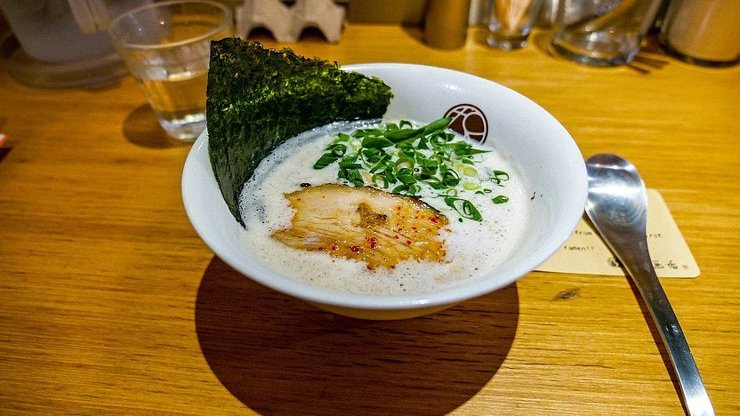
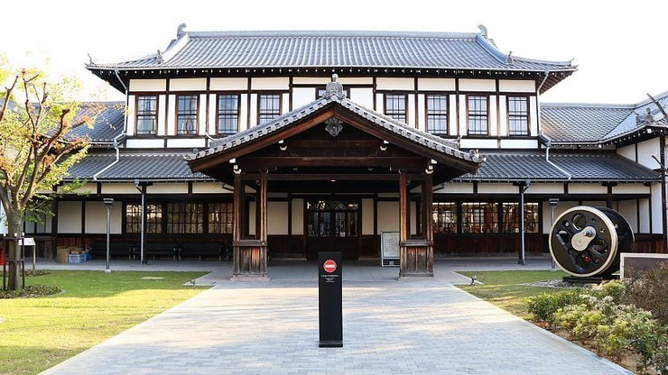

Shinyokohama Ramen Museum
新横浜ラーメン博物館
The Shinyokohama Ramen Museum (新横浜ラーメン博物館, Shin-Yokohama Ramen Hakubutsukan) is a unique museum about ramen, a popular noodle dish which was originally introduced from China.
In a gallery on the first floor, the Ramen Museum presents the history of ramen noodles in Japan, including the big success of instant ramen. It displays the variety of noodles, soups, toppings and bowls used across Japan, and shows how the noodles are made.
On the two basement floors, visitors can explore a 1:1 replica of some streets and houses of Shitamachi, the old town of Tokyo, of the 1950s, when the popularity of ramen was rapidly increasing. Nine ramen restaurants can be found there, each featuring a ramen dish from a different region of Japan.
For visitors who wish to try multiple ramen dishes, every store offers "mini ramen", a small portion of the feature dish. Tickets for the meals are purchased at vending machines in front of each store before entering.
